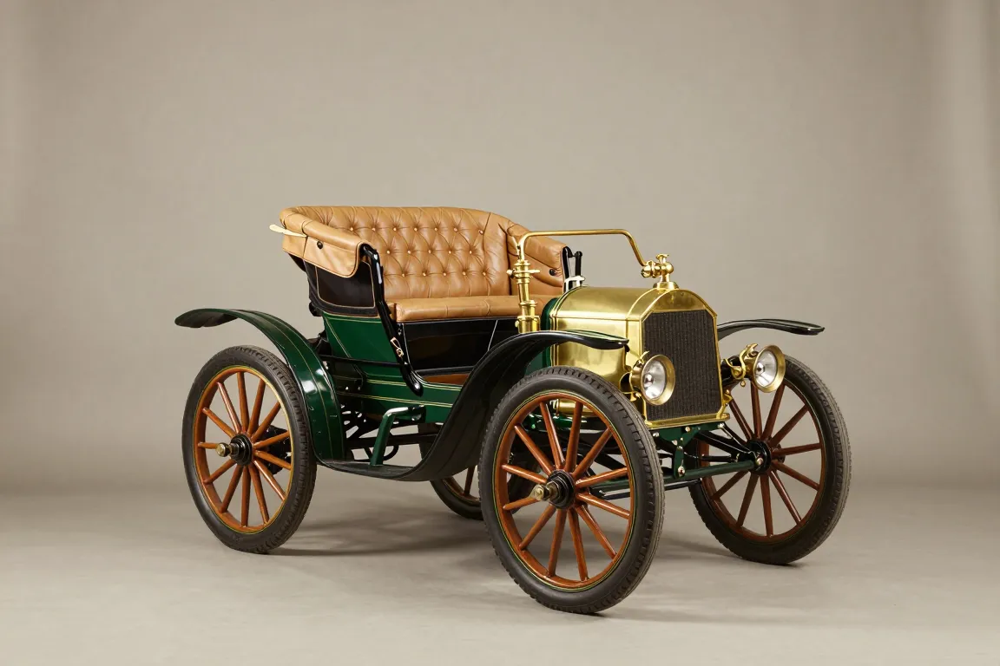

De første motorbilene. Et høyt, oppreist vognkarosseri på hjul med trekjever, med åpne seter, en sammenleggbar kalesje og lykter, kjøler og horn av polert messing.

Kjerneidé
Den første bilen er en vogn som har mistet hesten. Den beholder treverket, skinnet og messingen fra kjerrenes tid. Den viser motoren som en stolt maskin.
Designprinsipper
Sett karosseriet høyt på chassiset, med setet 90 til 110 cm over veien.
Bygg karosseriet på en ramme av ask, og kle det med tynn plate eller trepaneler.
Monter hjul med trekjever, 12 til 16 eiker hver, med en tynn felg og et smalt dekk.
Poler lyktene, kjøleren, hornet og dørhåndtakene i messing, og hold dem blanke.
Fest kalesjen som en sammenleggbar lerretsramme på jernbøyler, med skinnreimer.
Stopp setene dypt med hestehår, og knepp skinnet i et rutemønster.
La motoren, kjeden eller akselen og fjærene være synlige.